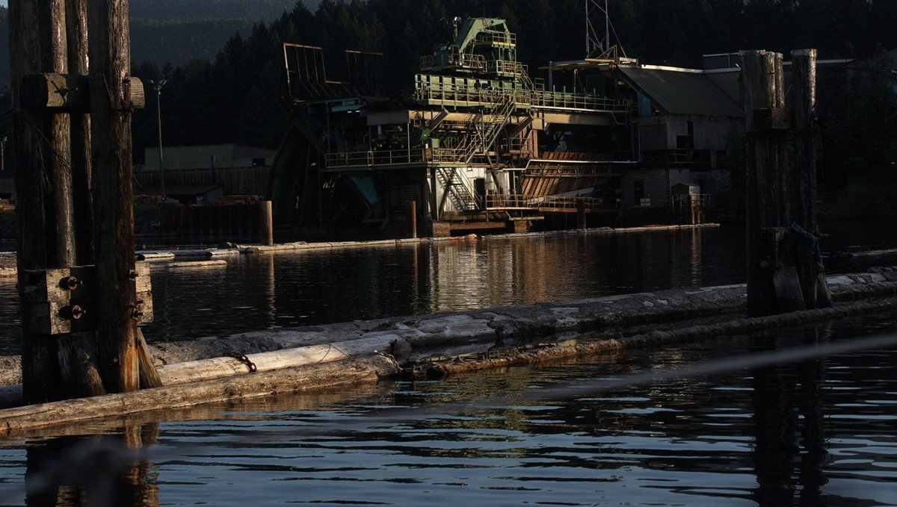
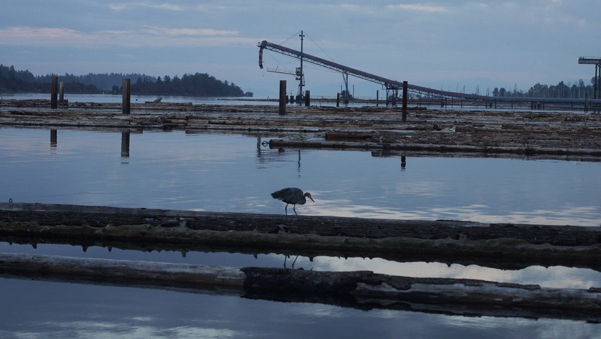

ladysmith
Note. What we refer to on this page as Ladysmith is the traditional, stolen, unceded, overlapping and/or shared territory land of the Snuneymuxw, Stz’uminus, and Quw’utsun First Nation people, Hul’qumi’num speaking peoples and the Cayuse, Umatilla and Walla Walla nations.
Ladysmith is a good stopover for groceries, and other necessities.
We've only ever stopped at the Ladysmith Yacht Club Reciprocal Dock. We like it there because the view is dreary as hell. The neighboring saw mill, and cormorants on pilings definitely contribute to the mood.
There are plenty of alternatives in the area for anchoring, like Sibell Bay and Evening Cove. There is also the Ladysmith Public Dock.
The nearest grocery is 49th Parallel, and they're well-stocked. There is a Save On Foods but it's a long, long walk away, it is better to go by bicycle. Home Hardware is right near Ladysmith Marina, south of the Trans Canada Highway.
The town has old tractors and heavy machinery on display by the main road, giving the town a steampunk feel.
